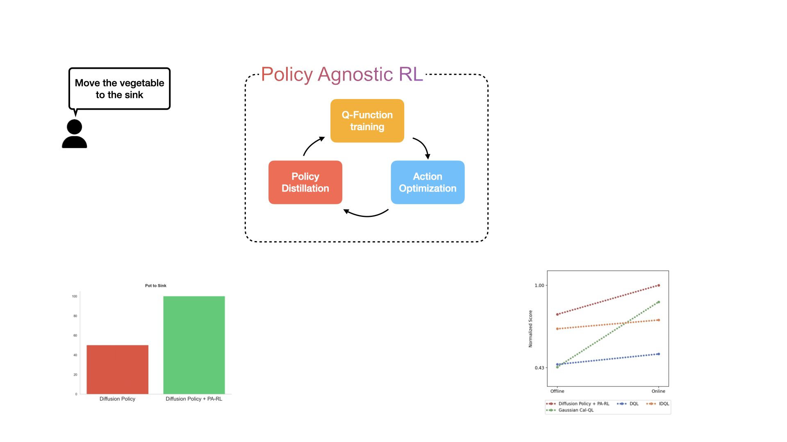

Max Sobol Mark, Tian Gao, Georgia Gabriela Sampaio, Mohan Kumar, Archit Sharma, Chelsea Finn, Aviral Kumar
The best performing models for robotics tasks - large pre-trained transformers, diffusion policies - still perform poorly on new tasks or slightly unseen conditions. Sample-efficient RL is a recipe for improving a policy’s performance cheaply and fast.
The Actor-Critic RL architecture yields fast improvement, but has only been used so far with small, gaussian policies. Can we get the best of both worlds, and improve large pre-trained transformers or diffusion policies through interaction?
The Critic objective will generally look something like:
\[ \mathcal{L}^Q = \mathbb{E}_{s, a, s' \sim \mathcal{D}} \left[ \left( Q_\theta(s, a) - (r(s, a) + \gamma \hat{Q}_\theta(s', \textcolor{red}{\pi_\phi (s')})) \right)^2 \right] \]
To optimize this objective, we only need to sample from the policy. For any reasonable \( \color{red} \pi_\phi \), we are going to be able to efficiently sample, and therefore train the Critic.
The Policy objective will look like:
\[ \mathcal{L}^\pi = - \mathbb{E}_{s \sim \mathcal{D}} \left[ Q_\theta (s, \textcolor{red}{\pi_\phi (s)}) \right] \]
Directly optimizing this requires computing \(\nabla_\phi \textcolor{red}{\pi_\phi(s)}\), or how the policy outputs change as we vary the inputs. This quantity is undefined for auto-regressive transformers, because their outputs are discrete.
Further, calculating it for diffusion policies requires back-propagating through the denoising chain, which is a slow and unstable process.
Takeaway: the Policy Improvement operator is the bottleneck for improving arbitrary policies.